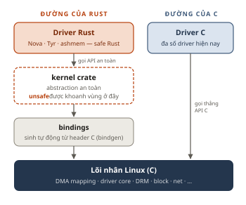

Rust trong nhân Linux: ngôn ngữ mới, luật chơi cũ¶
Sau ba năm "thử nghiệm", cuối 2025 Rust chính thức thành ngôn ngữ thứ hai của nhân Linux. Rust là gì, nó vào kernel bằng con đường nào, và vì sao hành trình ấy khiến vài maintainer kỳ cựu rời ghế?
1. Rust là gì?¶
Rust là ngôn ngữ lập trình hệ thống ra đời từ Mozilla, bản 1.0 phát hành năm 2015. Nó nhắm đúng ngách của C: biên dịch ra mã máy, không cần garbage collector, chạy được trên bare-metal. Khác biệt nằm ở trình biên dịch: hệ thống ownership và borrow checker kiểm tra tại thời điểm biên dịch rằng mỗi vùng nhớ có đúng một chủ sở hữu, và không ai dùng nó sau khi đã giải phóng.
Nhờ vậy, cả một lớp lỗi kinh điển của C (use-after-free, double-free, data race) bị chặn từ trước khi chạy. Với kernel, điều này đáng kể: theo một trình bày tại Linux Security Summit 2019, khoảng hai phần ba lỗ hổng kernel có gốc từ lỗi an toàn bộ nhớ [3]. Khi cần thao tác cấp thấp vẫn có khối unsafe, nhưng rủi ro được khoanh vùng và hiện rõ trong mã.
a. Hello world
b. Dùng vùng nhớ sau khi giải phóng
Hình 1. (a) Rust không cần header; println! là macro. (b) Cùng lỗi use-after-free: C biên dịch được và gây hành vi không xác định (UB), Rust từ chối ngay khi biên dịch.
2. Rust đang vào kernel như thế nào¶
Hỗ trợ Rust được merge vào mainline ở Linux 6.1 (10/2022) [1]. Mục tiêu chưa bao giờ là viết lại kernel, mà là cho phép viết code mới bằng Rust [3]; tháng 4/2025 kernel có khoảng 34 triệu dòng C và chỉ 25 nghìn dòng Rust [3]. Driver Rust không gọi thẳng hàm C, mà đi qua các lớp abstraction an toàn (Hình 2). Cuối 2025, Maintainers Summit tại Tokyo chính thức bỏ nhãn "experimental" [1] [2]. Một số ví dụ cụ thể:
- Android 16 · ashmem: thiết bị chạy kernel 6.12 dùng bộ cấp phát bộ nhớ chia sẻ ẩn danh viết bằng Rust; hàng triệu máy đang chạy Rust trong kernel [2].
- Nova (NVIDIA): driver GPU mã nguồn mở kế nhiệm Nouveau, do NVIDIA và Red Hat phát triển, liên tục thêm chức năng tới Linux 7.3 [4] [6].
- Tyr (Arm Mali): driver GPU Mali, Linux 7.3 cải thiện nạp firmware và boot MCU [6].
- Driver core, Linux 7.0: thêm generic I/O back-end,
dev_printkcho mọi loại thiết bị, nền cho abstraction thanh ghi [5].
Việc còn lại: build kernel chỉ bằng Rust stable, không cần #![feature], dự kiến 2026–2027 [7].

Hình 2. Driver Rust chỉ thấy API an toàn của kernel crate; unsafe và lời gọi hàm C nằm gọn trong lớp abstraction. Các lớp bọc này (như cho DMA) là tâm điểm tranh cãi ở mục 3.
3. Tranh cãi: khi kỹ thuật gặp con người¶
| Thời điểm | Sự kiện | Loại |
|---|---|---|
| 10/2022 | Rust vào Linux 6.1 | Kỹ thuật |
| 8/2024 | Wedson Almeida Filho rời dự án | Tranh cãi |
| 1/2025 | Hellwig chặn patch DMA | Tranh cãi |
| 2/2025 | Linus lên tiếng; Martin rời Asahi | Tranh cãi |
| 24/2/2025 | Hellwig rời ghế maintainer DMA | Tranh cãi |
| 12/2025 | Bỏ nhãn "experimental" | Kỹ thuật |
| 2026 | Linux 7.x: Nova, Tyr | Kỹ thuật |
Hình 3. Dòng thời gian: mốc kỹ thuật và mốc tranh cãi.
Tín hiệu đầu tiên đến từ Wedson Almeida Filho (kỹ sư Microsoft, co-maintainer phần Rust): tháng 8/2024 ông rút lui vì mệt mỏi với "nontechnical nonsense", sau những va chạm với một số maintainer, trong đó có Ted Ts'o, maintainer ext4 [8].
Đầu 2025, một patch cho phép driver Rust dùng DMA API bị Christoph Hellwig, maintainer DMA mapping và một trong những người đóng góp nhiều nhất cho kernel, từ chối. Ông ví codebase đa ngôn ngữ như "cancer", dù patch thực ra nằm trong rust/kernel chứ không phải kernel/dma [9].
"No Rust code in kernel/dma, please."
Christoph Hellwig, LKML, 1/2025 [9]
Hector Martin, người sáng lập Asahi Linux và co-maintainer code Apple Silicon, kêu gọi cứ merge và công khai gây áp lực trên mạng xã hội. Linus Torvalds phản ứng gay gắt với cách làm đó [10].
"How about you accept the fact that maybe the problem is you."
"Sao anh không chấp nhận rằng có thể vấn đề nằm ở chính anh."
Linus Torvalds gửi Hector Martin, 2/2025 [10]
Martin rời ghế maintainer rồi rời luôn Asahi ngày 13/2/2025, gọi cách Linus xử lý là "a major failure of leadership" [13]. Vài ngày sau, Linus cũng nói rõ với Hellwig rằng maintainer không tham gia mảng Rust thì không có quyền quyết định cách Rust dùng code C của họ [11]. Ngày 24/2, Hellwig giao ghế DMA cho Marek Szyprowski nhưng vẫn giữ NVMe [12].
Hai phía đều có lý. Phía dè dặt lo gánh nặng bảo trì khi một subsystem phải sống với hai ngôn ngữ; phía Rust cam kết tự bảo trì phần abstraction [9]. Heise nhận định gốc rễ nằm ở cách kernel ra quyết định: Linus lên tiếng khi hai developer đã rút lui [11]. Miguel Ojeda, trưởng dự án Rust for Linux, sau đó công bố chính sách Rust trong kernel [14], và đến cuối năm thì Rust ở lại, "zero pushback" [3].
Tài liệu tham khảo¶
- Phoronix, “Rust Experiment Is Done, Rust Is Here To Stay”, 12/2025
- DevClass, “Rust boosted by permanent adoption for Linux kernel code”, 15/12/2025
- The New Stack, “Rust Goes Mainstream in the Linux Kernel”, 12/2025
- Phoronix, “Open-Source Nova Driver In Linux 7.0 Continues Preparing For NVIDIA Turing GPU Support”
- Phoronix, “Linux 7.0 Driver Core Changes Bring More Enhancements For Rust Kernel Drivers”
- Phoronix, “Open-Source NVIDIA ‘Nova’ Driver Sees More Functionality For Linux 7.3”
- Rust Project Goals 2026, “Rust for Linux” roadmap
- Neowin, “Rust for Linux team suffers blow as its leader steps down over ‘nontechnical nonsense’”, 9/2024
- The Register, “Mixing Rust and C in Linux likened to cancer by kernel maintainer”, 5/2/2025
- The Register, “Linus Torvalds wades into Linux kernel Rust driver drama”, 7/2/2025
- Heise, “The Rust DMA dispute in the Linux kernel – An attempt at analysis”, 2/2025
- Phoronix, “Christoph Hellwig Steps Down From One Of His Kernel Roles Following Rust Drama”, 25/2/2025
- The Register, “After clash over Rust in Linux, now Asahi lead quits distro, slams Linus’ kernel leadership”, 13/2/2025
- The Register, “‘Key kernel maintainers’ still back Rust in the Linux kernel, despite the doubters”, 11/2/2025